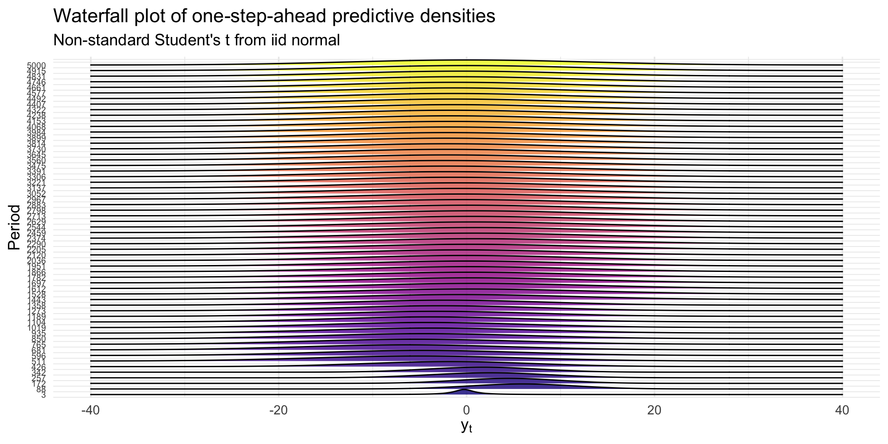
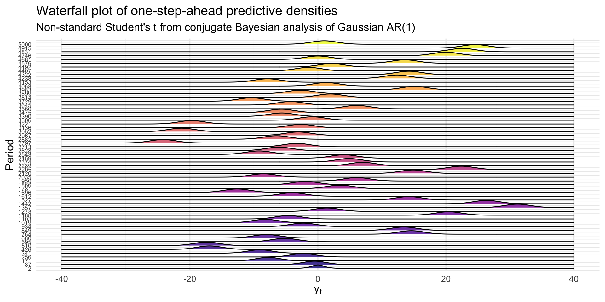
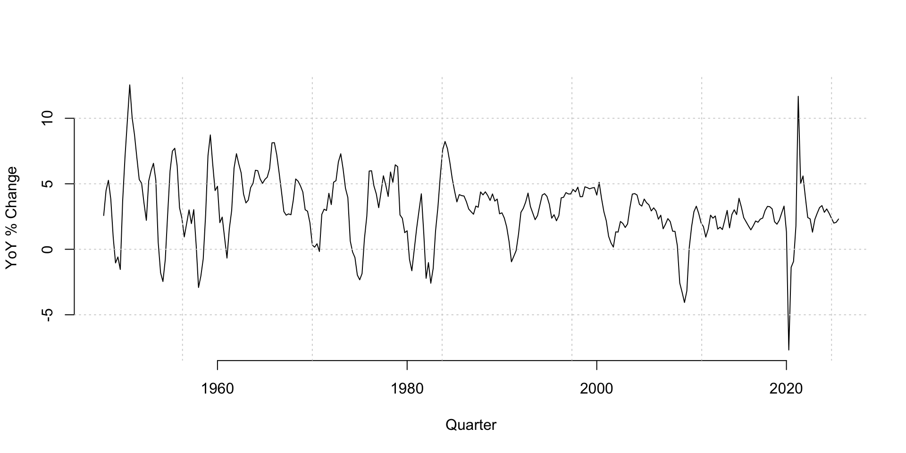
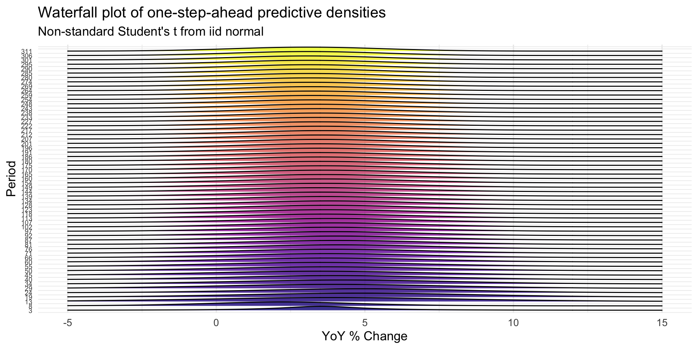
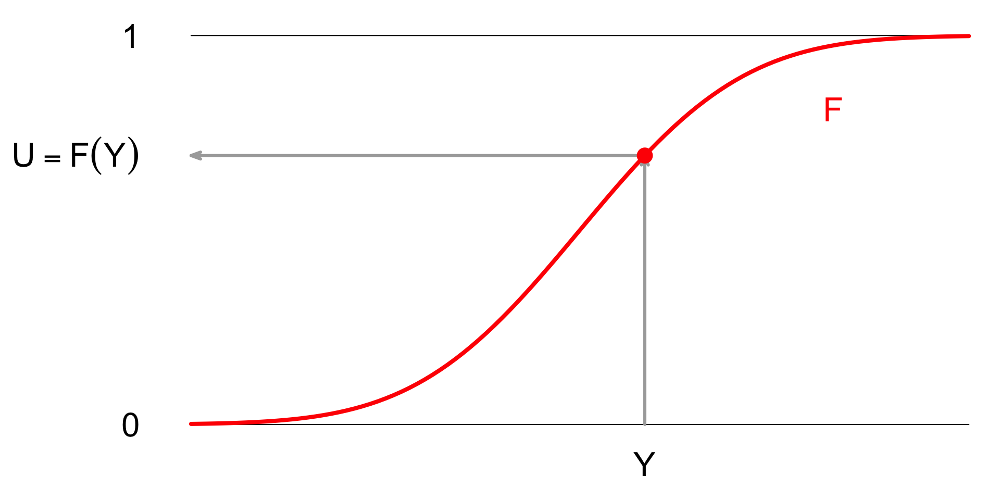
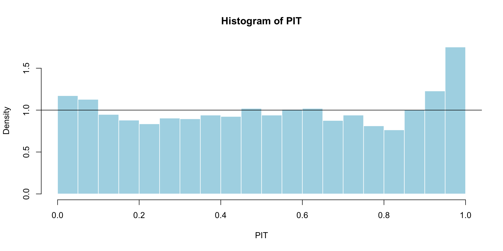
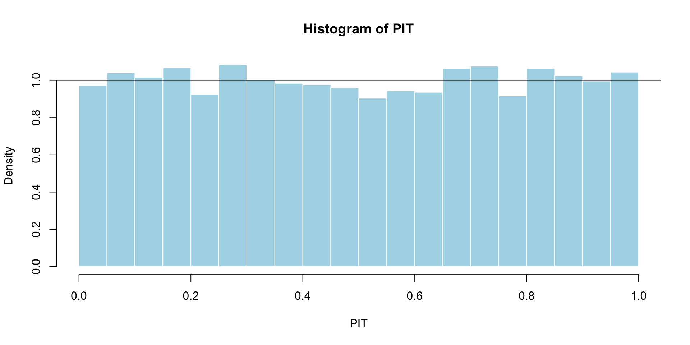
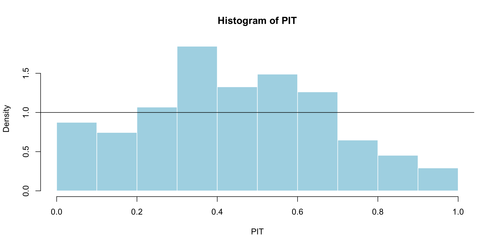
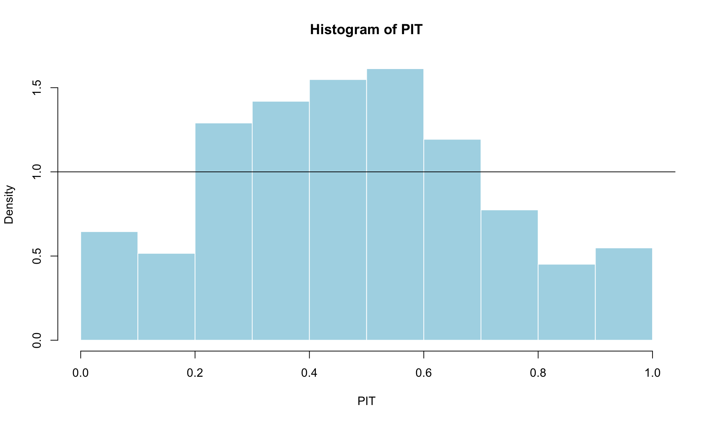

Probabilistic predictions
And how to evaluate them
Ed Iversen and John Zito
Duke University
STA 440 Spring 2026
Recap
The simplest non-trivial time series model
The autoregression of order 1, or AR(1):
\[ \begin{aligned} y_t &= \beta_0 + \beta_1 y_{t-1} + \varepsilon_t, \quad \varepsilon_t\iid\text{N}(0\com\sigma^2). \end{aligned} \]
This implies a joint distribution (it’s multivariate normal!) governed by a finite set of static parameters \(\Btheta = \begin{bmatrix}\beta_0&\beta_1&\sigma^2\end{bmatrix}^\tr\):
\[ \begin{aligned} p(y_{1:T}\given y_0\com \Btheta) &= \prod_{t=1}^T p(y_t\given y_{t-1}\com\Btheta). \end{aligned} \]
Viewed as a function of \(\Btheta\), that’s a (conditional) likelihood!
Likelihood-based inference
Classical route:
\[ \hat{\Btheta}_T=\argmax{\Btheta}\,p(y_{1:T}\given y_0\com \Btheta). \]
Bayesian route:
\[ p(\Btheta\given y_{0:T}) = \frac{p(y_{1:T}\given y_0\com \Btheta)p(\Btheta)}{p(y_{1:T}\given y_0)} . \]
The raw calculations are similar to iid regression, but the inferential theory can be very different because the \(y_t\) are now dependent.
Maximum likelihood
It’s “just” ordinary least squares (OLS):
\[ \begin{aligned} \By_T &= \begin{bmatrix}y_1&y_2 & \cdots & y_T\end{bmatrix}^\tr \\ \BX_T &= \begin{bmatrix} 1 & 1 & \cdots & 1 \\ y_0 & y_1 & \cdots & y_{T-1} \end{bmatrix}^\tr \\ \Bbeta &= \begin{bmatrix}\beta_0&\beta_1\end{bmatrix}^\tr \\ \\ \hat{\Bbeta}_T &= (\BX_T^\tr\BX_T)^{-1}\BX_T^\tr\By_T \\ \hat{\sigma^2_T} &= ||\By_T-\BX_T\hat{\Bbeta}_T||_2^2 / T. \end{aligned} \]
Conjugate Bayes
Take a conjugate normal-inverse-gamma prior:
\[ \begin{aligned} \sigma^2 &\sim \text{IG}(a_0\com b_0) \\ \Bbeta\given \sigma^2 &\sim \text{N}_2(\Bm_0\com\sigma^2\BH^{-1}_0) \\ y_t \given y_{t-1} \com \Bbeta\com\sigma^2 &\sim \text{N} \left( \Bx_t^\tr\Bbeta\com\sigma^2 \right), && \Bx_t=\begin{bmatrix}1 & y_{t-1}\end{bmatrix}^\tr. \end{aligned} \]
The posterior is available in closed-form:
\[ \begin{aligned} \sigma^2\given y_{0:T} &\sim \text{IG}(a_T\com b_T) \\ \Bbeta\given \sigma^2\com y_{0:T} &\sim \text{N}_2(\Bm_T\com\sigma^2\BH^{-1}_T) \\ \\ \BH_T &= \BX_T^\tr\BX_T+\BH_0 \\ \Bm_T &= \BH_T^{-1}(\BX_T^\tr\By_T+\BH_0\Bm_0) \\ a_T &= a_0 + T/2 \\ b_T &= b_0 + (\By_T^\tr\By_T+\Bm_0^\tr\BH_0\Bm_0-\Bm_T^\tr\BH_T\Bm_T)/2. \end{aligned} \]
Let’s think about probabilistic prediction

Point forecast
Your single-number best guess at tomorrow’s observation:
Forecast interval
A range of likely values for tomorrow’s observation:

Forecast density
Full distribution capturing uncertainty about tomorrow:

And then tomorrow finally comes
So…how’d we do?

What’s the point?
We want intervals and densities to communicate uncertainty about the forecast;
-
What sources of uncertainty?
- Data uncertainty (data are realization of random process);
- Parameter estimation uncertainty;
- Hyperparameter tuning uncertainty;
- Model uncertainty;
- Uncertainty introduced by missing data;
In the small world of the AR(1), mainly the first two for now.
A classical approach
Forecast distribution
- Given the data \(y_{0:t}\) we’ve seen, we want a full distribution for a future observation \(y_{t+h}\) we haven’t seen yet;
- In other words, we want a conditional distribution for the future given the past;
- We will momentarily treat the point estimate \(\hat{\Btheta} = \begin{bmatrix}\hat{\beta}_0&\hat{\beta}_1&\widehat{\sigma^2}\end{bmatrix}^\tr\) as if it were the fixed and known truth (newsflash: it isn’t!), and we will forecast using
\[ p(y_{t+h}\mid y_{0:t}\com \hat{\Btheta}). \]
So, what is that conditional distribution?
It’s a normal!
Writing down an AR(1) is “just” an alternative way of writing down a big multivariate normal across all time:
\[ \begin{bmatrix} y_1 & y_2 & \cdots & y_t & y_{t+1} & y_{t+2} & \cdots & y_{t+H} \end{bmatrix}^\tr\mid y_0\com \hat{\Btheta} \sim\text{N}_{T}\left(\Bmu(\hat{\Btheta})\com \BSigma(\hat{\Btheta})\right). \]
All of the marginals and conditionals of the multivariate normal are normal, and so however far into the future you want to go, you get:
\[ y_{t+h} \mid y_{0:t}\com \hat{\Btheta}\sim\N\left(\mu_{t+h|t}\com \sigma^2_{t+h|t}\right). \]
Let the computer deal with the means and variances.
Prediction intervals
The full predictive distribution is
\[ y_{t+h} \mid y_{0:t}\com \hat{\Btheta}\sim\N\left(\mu_{t+h|t}\com \sigma^2_{t+h|t}\right), \]
The point prediction is \(\mu_{t+h|t}\), and the prediction interval has the usual form:
\[ \begin{aligned} \mu_{t+h|t} &\pm z_{1-\frac{\alpha}{2}}^\star \sigma_{t+h|t} . \end{aligned} \]
Pics or it didn’t happen
#| '!! shinylive warning !!': |
#| shinylive does not work in self-contained HTML documents.
#| Please set `embed-resources: false` in your metadata.
#| standalone: true
#| viewerHeight: 700
library(shiny)
simulate_ar_1 <- function(T, b0, b1, s, y0){
y <- numeric(T)
y[1] <- y0
for(t in 2:T){
y[t] <- b0 + b1 * y[t - 1] + rnorm(1, 0, s)
}
return(y)
}
ar_1_mean <- function(h, b0, b1, yT){
if(h == 0){
return(yT)
} else {
return(b0 * sum(b1 ^ (0:(h-1))) + yT * (b1^h))
}
}
ar_1_var <- function(h, b1, s){
if(h == 0){
return(0)
} else {
return((s^2) * sum(b1 ^ (2*(0:(h-1)))))
}
}
ui <- fluidPage(
titlePanel("Forecast distribution of a Gaussian AR(1) with known parameters"),
sidebarLayout(
sidebarPanel(
sliderInput("b0", "β₀", min = -5, max = 5, value = 0, step = 0.1),
sliderInput("b1", "β₁", min = -2, max = 2, value = 0, step = 0.1),
sliderInput("s", "σ", min = 0, max = 2, value = 1, step = 0.1)
),
mainPanel(
plotOutput("distPlot", height = "600px")
)
)
)
server <- function(input, output) {
# fixed observed data
set.seed(123)
y_obs <- simulate_ar_1(10, 0, 0, 1, 0)
output$distPlot <- renderPlot({
b0 <- input$b0
b1 <- input$b1
s <- input$s
T_obs <- length(y_obs)
H <- 20 # forecast horizon
range <- 1:(T_obs + H)
# plot window
plot(range, c(y_obs, rep(NA,H)), type = "n",
xlab = "t", ylab = expression(y[t]),
ylim = c(-20,20), bty="n", main = "This is called a fan chart.")
# grey forecast region
rect(T_obs+0.5, -20, T_obs + H + 0.5, 20, col = rgb(0.8,0.8,0.8,0.5), border = NA)
# observed data
lines(1:T_obs, y_obs, col="black", lwd=2)
# forecast distribution intervals
alpha = c(0.01, seq(0.1,0.9,0.1))
middle <- sapply(0:H, ar_1_mean, b0, b1, y_obs[T_obs])
sds <- sqrt(sapply(0:H, ar_1_var, b1, s))
f_range <- T_obs:(T_obs+H)
for(a in alpha){
U = qnorm(1 - a/2, mean = middle, sd = sds)
L = qnorm(a/2, mean = middle, sd = sds)
polygon(c(f_range, rev(f_range)),
c(U, rev(L)),
col = rgb(1,0,0,0.15), border=NA)
}
# add mean forecast line
lines(f_range, middle, col="red", lwd=2, lty=2)
})
}
shinyApp(ui = ui, server = server)But wait!
- The parameters aren’t known. They’re a noisy estimate computed from imperfect data;
- There is sampling uncertainty associated with \(\hat{\Btheta}\). Shouldn’t that extra source of uncertainty be propagated through to the predictive distribution?
- Yes, but how? Can we just plug in estimates and replace \(z\) quantiles with \(t\) quantiles?
- Not quite. That was fine for iid regression, but it all breaks under time series dependence.
Bootstrap!
To produce prediction intervals that incorporate both future data uncertainty and parameter estimation uncertainty, you need to use the bootstrap. But again, it’s not the vanilla, iid bootstrap. It’s a bootstrap on the residuals, which are assumed iid in this model.
The details are in an appendix at the end of this deck.
Compare intervals
#| '!! shinylive warning !!': |
#| shinylive does not work in self-contained HTML documents.
#| Please set `embed-resources: false` in your metadata.
#| standalone: true
#| viewerHeight: 700
library(shiny)
ui <- fluidPage(
titlePanel("AR(1) Forecast: Plug-in vs Residual Bootstrap"),
sidebarLayout(
sidebarPanel(
sliderInput("true_b0", "True β₀:", min = -1, max = 1, value = 0.5, step = 0.1),
sliderInput("true_b1", "True β₁:", min = -0.95, max = 0.95, value = 0.7, step = 0.05),
sliderInput("true_sigma", "True σ:", min = 0.1, max = 2, value = 1, step = 0.1),
sliderInput("n_obs", "Sample size:", min = 40, max = 500, value = 100, step = 10),
actionButton("rerun", "Re-run simulation"),
checkboxInput("show_red", "Show plug-in fan (red)", TRUE),
checkboxInput("show_blue", "Show bootstrap fan (blue)", TRUE)
),
mainPanel(
plotOutput("fanPlot", height = "600px")
)
)
)
server <- function(input, output, session) {
simulate_ar_1 <- function(T, b0, b1, s, y1 = 0){
y <- numeric(T)
y[1] <- y1
for(t in 2:T){
y[t] <- b0 + b1 * y[t-1] + rnorm(1, 0, s)
}
return(y)
}
ar_1_mean_h <- function(h, b0, b1, yT){
if(h == 0) return(yT)
b0 * sum(b1^(0:(h-1))) + yT * (b1^h)
}
ar_1_var_h <- function(h, b1, sigma){
if(h == 0) return(0)
sigma^2 * sum(b1^(2*(0:(h-1))))
}
sim_data <- reactiveVal(NULL)
observeEvent(input$rerun, {
set.seed(123) # keep deterministic for reproducibility
n_obs <- input$n_obs
H <- 20
B <- 7500
y_obs <- simulate_ar_1(n_obs, input$true_b0, input$true_b1, input$true_sigma, y1 = 0)
# OLS fit
Y <- y_obs[2:n_obs]
X <- cbind(1, y_obs[1:(n_obs-1)])
ols_fit <- lm(Y ~ X - 1)
coef_hat <- coef(ols_fit)
b0_hat <- coef_hat[1]
b1_hat <- coef_hat[2]
resid_hat <- resid(ols_fit)
sigma_hat <- sqrt(sum(resid_hat^2) / (length(resid_hat) - 1))
h_seq <- 0:H
plug_mean <- sapply(h_seq, ar_1_mean_h, b0 = b0_hat, b1 = b1_hat, yT = y_obs[n_obs])
plug_sd <- sqrt(sapply(h_seq, ar_1_var_h, b1 = b1_hat, sigma = sigma_hat))
# bootstrap
bootstrap_forecasts <- matrix(NA, nrow = B, ncol = H + 1)
resid_centered <- resid_hat - mean(resid_hat)
for(b in 1:B){
e_star <- sample(resid_centered, size = n_obs - 1, replace = TRUE)
y_star <- numeric(n_obs)
y_star[1] <- y_obs[1]
for(t in 2:n_obs){
y_star[t] <- b0_hat + b1_hat * y_star[t-1] + e_star[t-1]
}
Ys <- y_star[2:n_obs]
Xs <- cbind(1, y_star[1:(n_obs-1)])
fit_star <- lm(Ys ~ Xs - 1)
coef_star <- coef(fit_star)
b0_star <- coef_star[1]
b1_star <- coef_star[2]
resid_star <- resid(fit_star)
resid_star_centered <- resid_star - mean(resid_star)
y_fut <- numeric(H + 1)
y_fut[1] <- y_obs[n_obs]
future_shocks <- sample(resid_star_centered, size = H, replace = TRUE)
for(h in 1:H){
y_fut[h + 1] <- b0_star + b1_star * y_fut[h] + future_shocks[h]
}
bootstrap_forecasts[b, ] <- y_fut
}
boot_mean <- colMeans(bootstrap_forecasts)
sim_data(list(
y_obs = y_obs,
plug_mean = plug_mean,
plug_sd = plug_sd,
bootstrap_forecasts = bootstrap_forecasts,
boot_mean = boot_mean,
H = H
))
}, ignoreNULL = FALSE)
output$fanPlot <- renderPlot({
dat <- sim_data()
if(is.null(dat)) return(NULL)
y_obs <- dat$y_obs
plug_mean <- dat$plug_mean
plug_sd <- dat$plug_sd
bootstrap_forecasts <- dat$bootstrap_forecasts
boot_mean <- dat$boot_mean
H <- dat$H
n_obs <- length(y_obs)
# Window: last 20 obs and 20 forecasts
obs_window <- (n_obs-19):n_obs
f_range <- (n_obs):(n_obs + H)
plot_range <- c((n_obs-19):(n_obs+H))
y_min <- min(c(y_obs[obs_window], plug_mean - 4 * plug_sd, bootstrap_forecasts))
y_max <- max(c(y_obs[obs_window], plug_mean + 4 * plug_sd, bootstrap_forecasts))
plot(plot_range, rep(NA, length(plot_range)), type = "n",
xlab = "t", ylab = expression(y[t]),
ylim = c(y_min, y_max), bty = "n",
main = "AR(1) forecast: plug-in (red) vs residual-bootstrap (blue)")
rect(n_obs + 0.5, y_min, n_obs + H + 0.5, y_max,
col = rgb(0.85,0.85,0.85,0.5), border = NA)
lines(obs_window, y_obs[obs_window], col = "black", lwd = 2)
# bootstrap fan
if(input$show_blue){
prob_levels <- c(0.001, 0.005, 0.01, seq(0.02, 0.48, by = 0.02))
lower_probs <- prob_levels
upper_probs <- 1 - prob_levels
boot_fan_lower <- apply(bootstrap_forecasts, 2, quantile, probs = lower_probs)
boot_fan_upper <- apply(bootstrap_forecasts, 2, quantile, probs = upper_probs)
for(i in seq_len(nrow(boot_fan_lower))){
polygon(c(f_range, rev(f_range)),
c(boot_fan_upper[i, ], rev(boot_fan_lower[i, ])),
col = rgb(0,0,1,0.08), border = NA)
}
lines(f_range, apply(bootstrap_forecasts, 2, median),
col = rgb(0,0,1,0.8), lty = 2, lwd = 1.5)
lines(f_range, boot_mean, col = rgb(0,0,1,0.9), lty = 1, lwd = 1)
}
# plug-in fan
if(input$show_red){
alpha_vec <- c(0.01, seq(0.1,0.9,by=0.1))
for(a in rev(alpha_vec)){
U <- qnorm(1 - a/2, mean = plug_mean, sd = plug_sd)
L <- qnorm(a/2, mean = plug_mean, sd = plug_sd)
polygon(c(f_range, rev(f_range)),
c(U, rev(L)),
col = rgb(1, 0, 0, 0.15), border = NA)
}
lines(f_range, plug_mean, col = "red", lty = 2, lwd = 2)
}
abline(v = n_obs + 0.5, lty = 3)
})
}
shinyApp(ui, server)A Bayesian approach
Posterior predictive distribution
After computing the posterior for parameters
\[ p(\Btheta\given y_{0:t}) = \frac{p(y_{1:t}\given y_0\com \Btheta)p(\Btheta)}{p(y_{1:t}\given y_0)}, \]
you base forecasts on the posterior predictive distribution:
\[ p(y_{t+1}\,|\,y_{0:t}) = \int p(y_{t+1}\,|\,y_{0:t},\,\boldsymbol{\theta}) p(\boldsymbol{\theta}\,|\,y_{0:t}) \,\text{d}\boldsymbol{\theta}. \]
Immediately incorporates both data and parameter uncertainty by construction.
Probabilistic prediction: a natural byproduct of Bayes
It falls out basically for free:
“Prediction of the value of an unobserved or future random variable is a fundamental problem in statistics. From a Bayesian point of view, it is solved in a straightforward manner by finding the posterior predictive density of the unobserved random variable given the data. If one does not want to pay the Bayesian price of having to determine a prior, no unifying basis for prediction has existed until recently.”
“If one does not want to pay the Bayesian price of having to determine a prior…” 🙄
“The anti-Bayesian is standing at the back window with a shotgun, scanning for priors coming over the hill, while a million assumptions just walk right into his house through the front door.”
Conjugate Bayes behaves like iid regression
A conjugate normal-inverse-gamma prior begets a conjugate posterior:
\[ \begin{aligned} \sigma^2\given y_{0:t} &\sim \text{IG}(a_t\com b_t) \\ \Bbeta\given \sigma^2\com y_{0:t} &\sim \text{N}_2(\Bm_t\com\sigma^2\BH^{-1}_t) \\ y_{t+1}\given\Bbeta\com \sigma^2\com y_{0:t} &\sim \N(\Bx_{t+1}^\tr\Bbeta\com\sigma^2),\quad \Bx_{t+1}=\begin{bmatrix}1 & y_{t}\end{bmatrix}^\tr. \end{aligned} \]
The one-step posterior predictive distribution is non-standard Student’s \(t\):
\[ \begin{aligned} y_{t+1}\given y_{0:t} &\sim t(\nu_{t+1|t}\com\bar{y}_{t+1|t}\com s_{t+1|t}^2) \\ \\ \nu_{t+1|t} &= 2a_t \\ \bar{y}_{t+1|t} &= \Bx_{t+1}^\tr\Bm_t \\ s_{t+1|t}^2 &= \frac{b_t}{a_t} (1+\Bx_{t+1}^\tr\BH_t^{-1}\Bx_{t+1}) . \end{aligned} \]
To forecast farther out in time, you need to simulate.
One-step-ahead probabilistic prediction
Our density forecast is:
\[ y_{t+1}\mid y_{0:t} \sim t(\nu_{t+1|t}\com\bar{y}_{t+1|t}\com s_{t+1|t}^2). \]
The moments are
\[ \begin{aligned} E(y_{t+1}\mid y_{0:t}) &= \bar{y}_{t+1|t} , && \nu_{t+1|t}>1 \\ \text{var}(y_{t+1}\mid y_{0:t}) &= \frac{\nu_{t+1|t}}{\nu_{t+1|t}-2} s_{t+1|t}^2 , && \nu_{t+1|t}>2. \end{aligned} \]
Use quantiles to get prediction intervals.
Monte Carlo
How do you get full predictive distributions?
In general, use simulation:
- Classical approach: bootstrapping;
- Bayesian approach: posterior predictive simulation.
Either way, you get Monte Carlo draws from a forecast distribution:
\[ \tilde{y}_{t+h}^{(1)}\com \tilde{y}_{t+h}^{(2)}\com ...\com \tilde{y}_{t+h}^{(k)} \sim \hat{F}_{t+h|t}. \]
What do you do with them?
Probabilistic forecasting via Monte Carlo
Use the simulations \(\tilde{y}_{t+h}^{(1:k)}=\left\{\tilde{y}_{t+h}^{(1)}\com \tilde{y}_{t+h}^{(2)}\com ...\com \tilde{y}_{t+h}^{(k)}\right\}\) to construct whatever forecast object you want:
\[ \hat{y}_{t+h|t}=\frac{1}{k}\sum\limits_{j=1}^k\tilde{y}_{t+h}^{(j)}. \quad (\text{...or median}) \]
Forecast interval:
\[ \hat{I}_{t+h|t} = \left[\hat{Q}_{\frac{\alpha}{2}}\left(\tilde{y}_{t+h}^{(1:k)}\right)\com \hat{Q}_{1-\frac{\alpha}{2}}\left(\tilde{y}_{t+h}^{(1:k)}\right)\right]. \quad (...\text{or hdi}) \]
Forecast distribution:
\[ \hat{f}_{t+h|t} = \text{histogram}\left(\tilde{y}_{t+h}^{(1:k)}\right). \quad (...\text{or kde}) \]
Evaluating probabilistic predictions
How do you evaluate the forecasts?
You generate a sequence of one-step-ahead predictions:
\[ \begin{matrix} \hat{y}_{1|0} & \hat{y}_{2|1} & \hat{y}_{3|2} & \hat{y}_{4|3} & \hat{y}_{5|4} & \cdots&\hat{y}_{t|t-1} & \cdots\\ \hat{I}_{1|0} & \hat{I}_{2|1} & \hat{I}_{3|2} & \hat{I}_{4|3} & \hat{I}_{5|4} & \cdots&\hat{I}_{t|t-1} & \cdots\\ \hat{f}_{1|0} & \hat{f}_{2|1} & \hat{f}_{3|2} & \hat{f}_{4|3} & \hat{f}_{5|4} & \cdots&\hat{f}_{t|t-1} & \cdots \end{matrix} \]
But then the data you were trying to forecast eventually arrive:
\[ \begin{matrix} y_1 & y_2 & y_3 & y_4 & y_5 & \cdots &y_t & \cdots \end{matrix} \]
How do we score the forecasts and summarize?
The game
We will illustrate by comparing the performance of two well-behaved methods:
A. classical predictive distribution from iid normal model;
B. posterior predictive distribution from conjugate, Gaussian AR(1).There will be two running examples:
1. Simulated data from AR(1)
- Method A (iid normal) is wrong by construction;
- Method B is right by construction;
2. Quarterly real GDP growth
- both methods are "wrong," but is one strictly preferred?Our forecast metrics will tease all of that out.
Method A
Assume
\[ y_1\com y_2\com ...\com y_n\com y_{n+1}\iid\N(\mu\com\sigma^2). \]
We know \(\bar{y}_n\sim\N(\mu\com \sigma^2/n)\) independent of \(y_{n+1}\), and so:
\[ \frac{\bar{y}_n-y_{n+1}}{\sigma\sqrt{1+\frac{1}{n}}}\sim\N(0\com 1) \quad \implies \quad \frac{\bar{y}_n-y_{n+1}}{\hat{\sigma}\sqrt{1+\frac{1}{n}}}\sim t_{n-1}. \]
The (classical) predictive distribution for the next \(y_{n+1}\) is:
\[ t\left(n-1\com \bar{y}_n\com \widehat{\sigma^2}\left(1+\frac{1}{n}\right)\right). \]
This incorporates sampling uncertainty for the mean and variance, and the inherent uncertainty in new \(y_{n+1}\).
Method B: you know the drill
A conjugate normal-inverse-gamma prior begets a conjugate posterior:
\[ \begin{aligned} \sigma^2\given y_{0:t} &\sim \text{IG}(a_t\com b_t) \\ \Bbeta\given \sigma^2\com y_{0:t} &\sim \text{N}_2(\Bm_t\com\sigma^2\BH^{-1}_t) \\ y_{t+1}\given\Bbeta\com \sigma^2\com y_{0:t} &\sim \N(\Bx_{t+1}^\tr\Bbeta\com\sigma^2),\quad \Bx_{t+1}=\begin{bmatrix}1 & y_{t}\end{bmatrix}^\tr. \end{aligned} \]
The one-step posterior predictive distribution is non-standard Student’s \(t\):
\[ \begin{aligned} y_{t+1}\given y_{0:t} &\sim t(\nu_{t+1|t}\com\bar{y}_{t+1|t}\com s_{t+1|t}^2) \\ \\ \nu_{t+1|t} &= 2a_t \\ \bar{y}_{t+1|t} &= \Bx_{t+1}^\tr\Bm_t \\ s_{t+1|t}^2 &= \frac{b_t}{a_t} (1+\Bx_{t+1}^\tr\BH_t^{-1}\Bx_{t+1}) . \end{aligned} \]
Dataset 1: simulated

Forecast distributions from iid normal

Forecast distributions from Bayesian AR(1)

Dataset 2: US quarterly real GDP growth

Forecast distributions from iid normal

Forecast distributions from Bayesian AR(1)

Evaluating point forecasts
Any ideas?

Point prediction
We want the point prediction that minimizes expected loss:
\[ \hat{y}_{t+1|t} \;=\; \argmin{\hat{y}\in\mathbb{R}} \; E\big[\, L\big(y_{t+1},\,\hat{y}\big) \,\big|\, y_{0:t} \big]. \]
The expectation is taken with respect to the “true” or “idealized” conditional distribution \(p(y_{t+1}\given y_{0:t})\), which we don’t know.
We approximate it with whatever forecast distribution we’ve generated.
Picking a loss function
We have nice results for some loss functions:
\[ \begin{array}{rcl} L(y_{t+1},\hat{y}) = (y_{t+1} - \hat{y})^2 & \implies & \hat{y}_{t+1|t} = E[\,y_{t+1}\mid y_{0:t}\,] \\[1.2em] L(y_{t+1},\hat{y}) = |y_{t+1} - \hat{y}| & \implies & \hat{y}_{t+1|t} = \operatorname{median}(y_{t+1}\mid y_{0:t}). \end{array} \]
And there are many more where that came from.
In practice
Metrics for scoring the average quality of the point predictions over time:
\[ \begin{aligned} \text{MSFE} &= \frac{1}{T} \sum\limits_{t=1}^T (y_t-\hat{y}_{t|t-1})^2 \\ \text{MAFE} &= \frac{1}{T} \sum\limits_{t=1}^T |y_t-\hat{y}_{t|t-1}|. \end{aligned} \]
We want these to be small.
Make sure your loss function and your point prediction play nice
- If you’re looking at MAFE, use forecast median;
- If you’re looking at MSFE, use the forecast mean.
Our simulated data
MSE of forecast mean:
[1] 162.4966[1] 4.162699Our real data
MSE of forecast mean:
[1] 6.66254[1] 2.582788Evaluating interval forecasts
Any ideas?

Interval width and coverage
- You want intervals that are small enough to be informative, but large enough to swallow the truth often, and there’s a trade-off.
- \(\hat{I}=(-\infty\com \infty)\) always has perfect coverage but teaches you nothing;
- Look at average size and empirical coverage:
\[ \begin{aligned} \overline{\text{Size}} &= \frac{1}{T} \sum_{t=1}^{T} \Big( \hat{I}_{t\mid t-1}^{\text{upper}} - \hat{I}_{t\mid t-1}^{\text{lower}} \Big), \\[0.8em] \overline{\text{Coverage}} &= \frac{1}{T} \sum_{t=1}^{T} \mathbf{1}\Big( y_t \in \hat{I}_{t\mid t-1} \Big). \end{aligned} \]
Interval performance on simulated data
Size of 90% intervals:
Interval performance on GDP growth
Size of 90% intervals:
Coverage of 90% intervals:
In this case it turns out that you get the same (over-)coverage from either procedure, but the AR(1) intervals are smaller on average.
Interval score
Average over time for an holistic metric of interval performance:
\[ \mathrm{IS}_\alpha(l,u; y) = (u - l) + \frac{2}{\alpha}\,(l - y)\,\mathbf{1}(y < l) + \frac{2}{\alpha}\,(y - u)\,\mathbf{1}(y > u). \]
Synthesizes both size and coverage, but in practice, if you want to understand why the score was good or bad, you have to crack it open and look at the size and coverage components separately anyway.
Evaluating density forecasts
Any ideas?

Recap: probability integral transform (PIT)
Take a random variable \(Y\sim F\) and plug it into its own cdf to define a new random variable \(U=F(Y)\):

Recap: probability integral transform (PIT)
If you take a (continuous) random variable \(Y\sim F\) and plug it into its own cdf to define a new random variable \(U=F(Y)\), then the new thing has:
\[ U\sim \text{Unif}(0\com 1). \]
Fix any \(u\in(0\com 1)\). Then the cdf of the new random variable \(U\) is:
\[ P(U\leq u)=P(F(Y)\leq u)=P(Y\leq F^{-1}(u))=F(F^{-1}(u))=u. \]
That’s the cdf of Unif(0, 1).
Don’t believe me?

What’s PIT got to do with it?
Let \(G_t\) be the “true” cdf that nature is drawing from to produce \(y_t\). By the probability integral transform, we know that:
\[ G_1(y_1)\com G_2(y_2)\com ...\com G_t(y_t)\com ...\sim\text{Unif}(0\com 1). \]
It would be amazing if our method produced exactly correct predictive distributions: \(\hat{F}_{t|t-1}=G_t\). We’re probably not so lucky, but if we’re in the ballpark, then we should see:
\[ \hat{F}_{1|0}(y_1)\com \hat{F}_{2|1}(y_2)\com ...\com \hat{F}_{t|t-1}(y_t)\com ...\sim\text{Unif}(0\com 1). \]
Let’s check!
iid normal method on simulated data

Bayesian AR(1) on simulated data

Remember: up to estimation error, this method is exactly correct by construction.
iid normal method on GDP growth

Clearly not uniform.
Bayesian AR(1) on GDP growth

What does it mean that these have a peak in the middle?
Diagnosing under/over-dispersion

What do the PIT values tell you?
Where did the true \(y\) fall under your predictive distribution?

What do the PIT values tell you?
- If \(y\) tends to surprise in the left tail, we’ll get too many PITs near 0;
- If \(y\) tends to surprise in the right tail, we’ll get too many PITs near 1;
- If \(y\) tends to surprise in the middle, we’ll get too many PITs near 0.5;
- If the forecast distributions tend to be overdispersed (too much mass in the tails), the histogram is hump-shaped;
- If the forecast distributions tend to be underdispersed (not enough mass in the tails), the histogram is u-shaped.
Summary: calibration
If your sequence of forecast distributions is well-calibrated, then the PITs should be approximately uniformly distributed:
\[ \hat{F}_{1|0}(y_1)\com \hat{F}_{2|1}(y_2)\com ...\com \hat{F}_{t|t-1}(y_t)\com ...\sim\text{Unif}(0\com 1). \]
Check it with a histogram, QQ-plot, goodness-of-fit test…
Deviations from uniformity provide useful diagnostic information.
This is necessary but not sufficient!
Calibration alone is not enough to distinguish good/better/best forecasts.
Maximize sharpness subject to calibration
- You want a forecasting method to be calibrated;
- If you have many methods to choose from, all of which appear calibrated, select the one that is the sharpest;
- Sharpness refers to how concentrated the forecast distributions are. Among calibrated distributions, you want the one that is sharpest, most decisive, most concentrated;
- Sharpness can be measured by your preferred measure of spread: variance, IQR, etc.
Sharpness for the simulated data
Compare the scale parameters of the predictive distributions:

Sharpness for the GDP growth

Log predictive score
Evaluates if the forecast distribution placed high mass/density on the region where \(y_t\) actually showed up:
\[ \overline{\text{LPS}} = \frac{1}{T} \sum_{t=1}^{T} \ln \hat{f}_{t|t-1}(y_t). \]
- Bigger is better;
- Simultaneously rewards both calibration and sharpness;
- Proper scoring rule: encourages honest probabilistic predictions;
- Local measure of quality. There are also global measures like the continuous ranked probability score (CRPS).
LPS rewards both calibration and sharpness

For our examples
Simulated data:
Authors and papers to know
- Gneiting & Raftery (2007): “Strictly Proper Scoring Rules, Prediction, and Estimation,” JASA;
- Hard to read, but packed with useful info;
- Gneiting, Balabdaoui, & Raftery (2007): “Probabilistic Forecasts, Calibration and Sharpness,” JRSSB;
- “We propose a diagnostic approach to the evaluation of predictive performance that is based on the paradigm of maximizing the sharpness of the predictive distributions subject to calibration.” Bada bing.
Software to check out
BONUS: Bootstrap for time series
Bootstrapping for dependent data with iid errors
- Data come from an AR(1) with mean zero iid errors (may not be normal!):
\[ y_t = \beta_0 + \beta_1 y_{t-1} + \varepsilon_t, \quad \varepsilon_t \overset{\text{iid}}{\sim}F; \]
- Use observed \(y_{0:T}\) to compute OLS estimate \(\hat{\Bbeta}_T\);
- Estimate residuals and center them:
\[ \hat{\varepsilon}_t=y_t-\hat{\beta}_0-\hat{\beta}_1y_{t-1}\quad \to\quad e_t=\hat{\varepsilon}_t-\sum\limits_{j=1}^T\hat{\varepsilon}_j/T. \]
- Construct alternative time series by resampling residuals:
\[ \begin{aligned} \tilde{y}_0&=y_0\\ \tilde{y}_t&=\hat{\beta}_0+\hat{\beta}_1\tilde{y}_{t-1}+\tilde{e}_{t},&&\tilde{e}_{t}\overset{\text{iid}}{\sim} \hat{F}_T. \end{aligned} \]
Repeats the last step many times, and from then on it’s bootstrap like normal.
Bootstrapping the residuals
Gird your loins:
\[ \begin{matrix} \text{1. Original data} &&& y_{0:T} && \\ &&& \downarrow && \\ \text{2. OLS} &&& \hat{\Btheta}_{T} && \\ &&& \downarrow && \\ \text{3. Estimate (centered) residuals} &&& e_{1:T} && \\ &\swarrow &\swarrow& \cdots &\searrow&\searrow \\ \text{4. Resample residuals}&\tilde{e}_{1:T}^{(1)} &\tilde{e}_{1:T}^{(2)}& \cdots &\tilde{e}_{1:T}^{(k-1)}&\tilde{e}_{1:T}^{(k)} \\ &\downarrow &\downarrow& \cdots &\downarrow&\downarrow \\ \text{5. Bootstrap time series}&\tilde{y}_{0:T}^{(1)} &\tilde{y}_{0:T}^{(2)}& \cdots &\tilde{y}_{0:T}^{(k-1)}&\tilde{y}_{0:T}^{(k)} \\ &\downarrow &\downarrow& \cdots &\downarrow&\downarrow \\ \text{6. Bootstrap estimates}&\tilde{\Btheta}_{T}^{(1)} &\tilde{\Btheta}_{T}^{(2)}& \cdots &\tilde{\Btheta}_{T}^{(k-1)}&\tilde{\Btheta}_{T}^{(k)} \\ &\downarrow &\downarrow& \cdots &\downarrow&\downarrow \\ \text{7. Draw more residuals}&\tilde{e}_{T+1:T+h}^{(1)} &\tilde{e}_{T+1:T+h}^{(2)}& \cdots &\tilde{e}_{T+1:T+h}^{(k-1)}&\tilde{e}_{T+1:T+h}^{(k)} \\ &\downarrow &\downarrow& \cdots &\downarrow&\downarrow \\ \text{8. Simulate forecasts}&\tilde{y}_{T+1:T+h}^{(1)} &\tilde{y}_{T+1:T+h}^{(2)}& \cdots &\tilde{y}_{T+1:T+h}^{(k-1)}&\tilde{y}_{T+1:T+h}^{(k)} \\ \end{matrix} \]
In other words, it’s awful.
And that’s just the tip of the iceberg

If you really want to know,
Lahiri is your man.